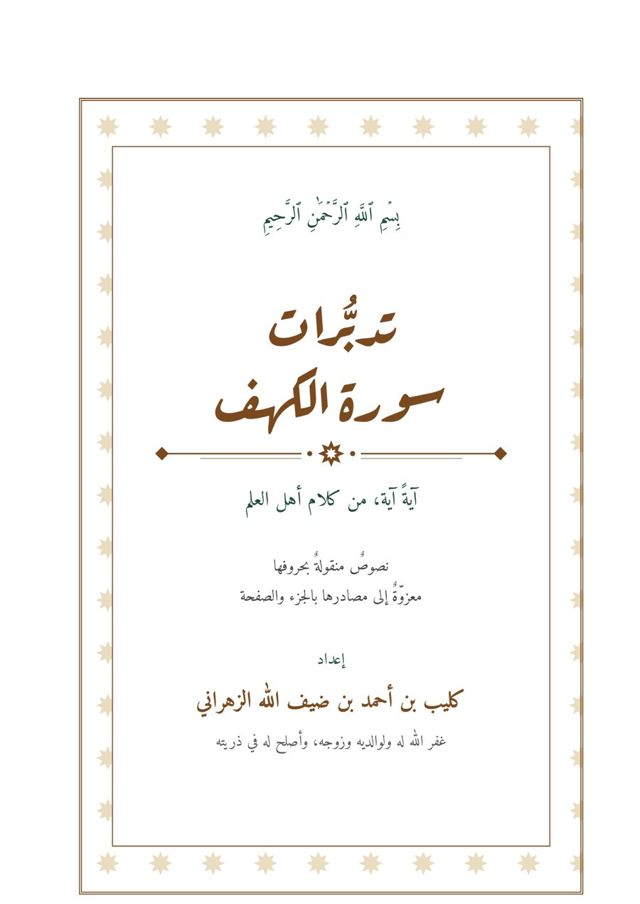

في فضل سورة الكهف
عن أبي الدرداء رضي الله عنه أن النبي ﷺ قال: «مَنْ حَفِظَ عَشْرَ آيَاتٍ مِنْ أَوَّلِ سُورَةِ الْكَهْفِ، عُصِمَ مِنَ الدَّجَّالِ»
رواه مسلم (٨٠٩)

تدبراتٌ في سورة الكهف آيةً آية، جُمعت من كلام أهل العلم بنصوصها، ورُتبت على ترتيب الآيات، ووُضع لكل نصٍّ عنوانٌ يدل على مضمونه؛ ليقف القارئ عند كل آية فيتأمل ما فيها من الهدايات والعبر. وقد نُقلت النصوص بحروفها معزوّةً إلى مصادرها بالجزء والصفحة، واقتُصر فيها على ما يوافق منهج أهل السنة والجماعة.